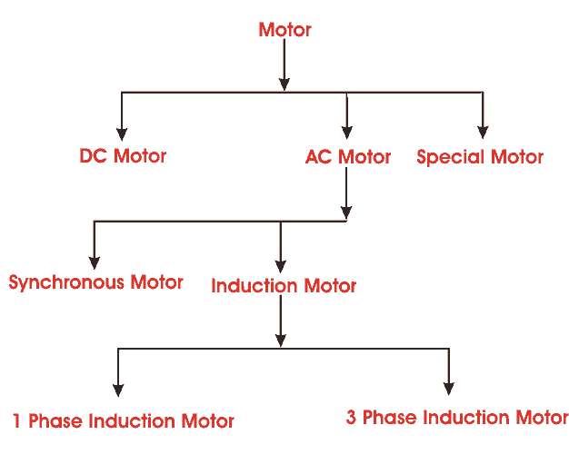
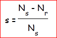
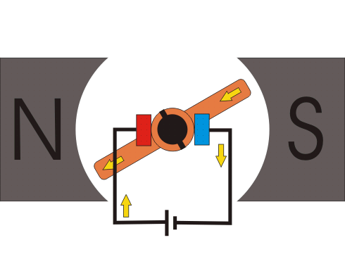

Electrical Motor
The motor or an electrical motor is a device that has brought about one of the biggest advancements in the fields of engineering and technology ever since the invention of electricity. A motor is nothing but an electro-mechanical device that converts electrical energy to mechanical energy. Its because of motors, life is what it is today in the 21st century. Without motor we had still been living in Sir Thomas Edison’s Era where the only purpose of electricity would have been to glow bulbs. There are different types of motor have been developed for different specific purposes.
In simple words we can say a device that produces rotational force is a motor. The very basic principal of functioning of an electrical motor lies on the fact that force is experienced in the direction perpendicular to magnetic field and the current, when field and electric current are made to interact with each other. Ever since the invention of motors, a lot of advancements has taken place in this field of engineering and it has become a subject of extreme importance for modern engineers. This particular webpage takes into consideration, the above mentioned fact and provides a detailed description on all major electrical motors and motoring parts being used in the present era.
Classification or Types of Motor
The primary classification of motor or types of motor can be tabulated as shown below,

History of Motor
In the year 1821 British scientist Michael Faraday explained the conversion of electrical energy into mechanical energy by placing a electric current carrying conductor in a magnetic field which resulted in the rotation of the conductor due to torque produced by the mutual action of electrical electric current and field. Based on his principal the most primitive of machines a D.C.(direct current) machine was designed by another British scientist William Sturgeon in the year 1832. But his model was overly expensive and wasn’t used for any practical purpose. Later in the year 1886 the first electrical motor was invented by scientist Frank Julian Sprague. That was capable of rotating at a constant speed under a varied range of load, and thus derived motoring action.
INDEX
DC Motor
Synchronous Motor
3 Phase Induction Motor
1 Phase Induction Motor
Special Types of Motor
Among the four basic classification of motors mentioned above the DC motor as the name suggests, is the only one that is driven by direct current. It’s the most primitive version of the electric motor where rotating torque is produced due to flow of electric current through the conductor inside a magnetic field.
Rest all are A.C. electrical motors, and are driven by alternating current, for e.g. the synchronous motor, which always runs at synchronous speed. Here the rotor is an electro - magnet which is magnetically locked with stator rotating magnetic field and rotates with it. The speed of these machines are varied by varying the frequency (f) and number of poles (P), as Ns = 120 f/P.
In another type of AC motor where rotating magnetic field cuts the rotor conductors, hence circulating electric current induced in these short circuited rotor conductors. Due to interaction of the magnetic field and these circulating currents the rotor starts rotates and continues its rotation. This is induction motor which is also known as asynchronous motor runs at a speed lesser than synchronous speed, and the rotating torque, and speed is governed by varying the slip which gives the difference between synchronous speed Ns , and rotor speed speed Nr,

It runs governing the principal of EMF induction due to varying flux density, hence the name induction machine comes. Single phase induction motor like a 3 phase, runs by the principal of emf induction due to flux, but the only difference is, it runs on single phase supply and its starting methods are governed by two well established theories, namely the Double Revolving field theory and the Cross field theory.
Apart from the four basic types of motor mentioned above, there are several types Of special electrical motors like Linear Induction motor(LIM),Stepper motor, Servo motor etc with special features that has been developed according to the needs of the industry or for a particular particular gadget like the use of hysteresis motor in hand watches because of its compactness.

 by
by